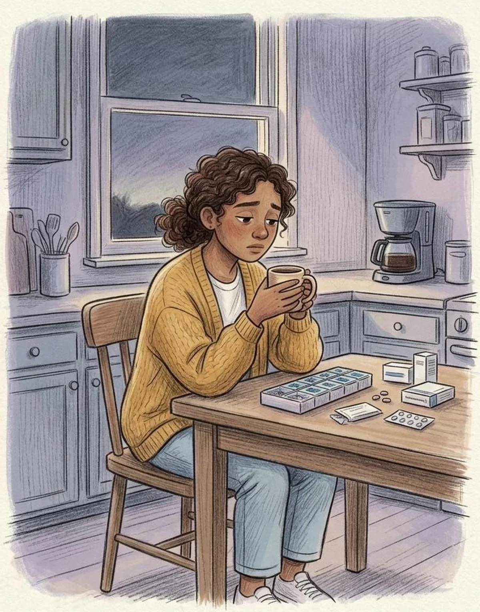
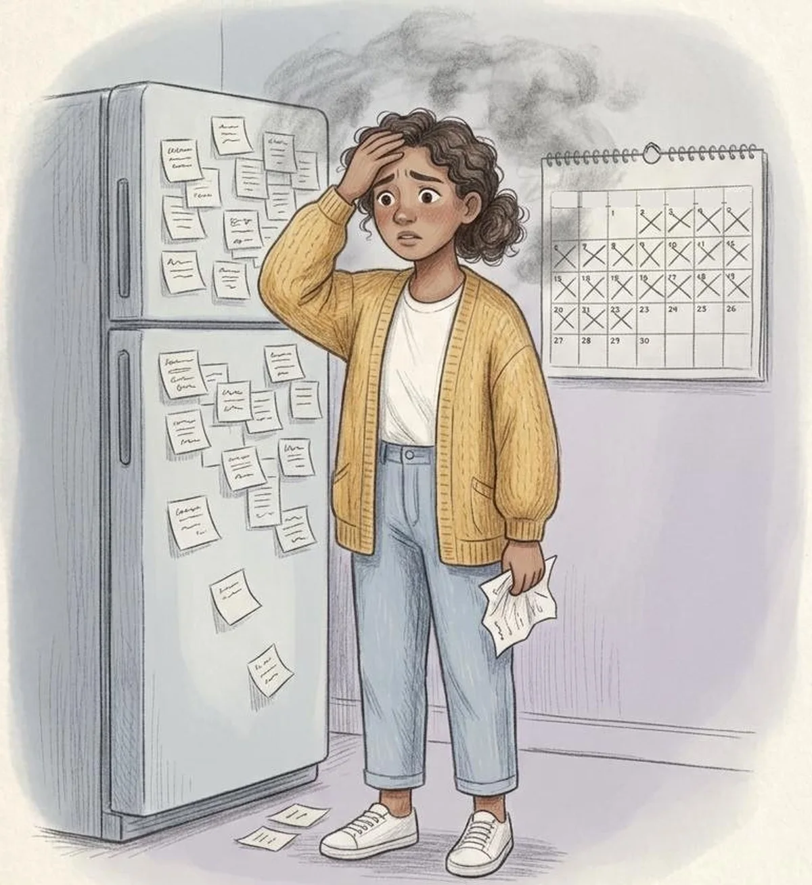
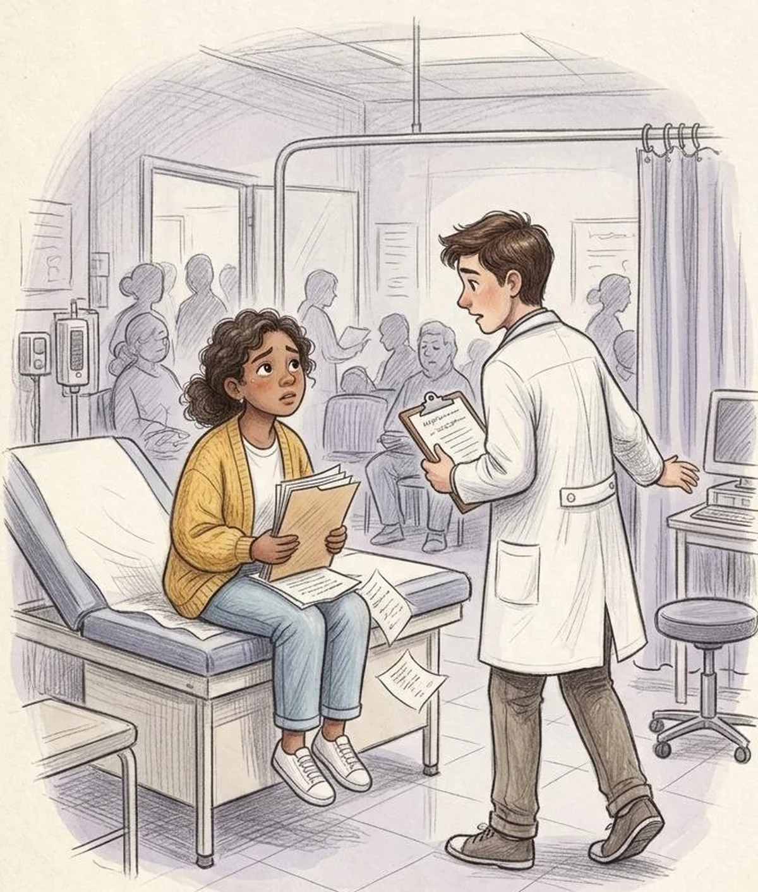
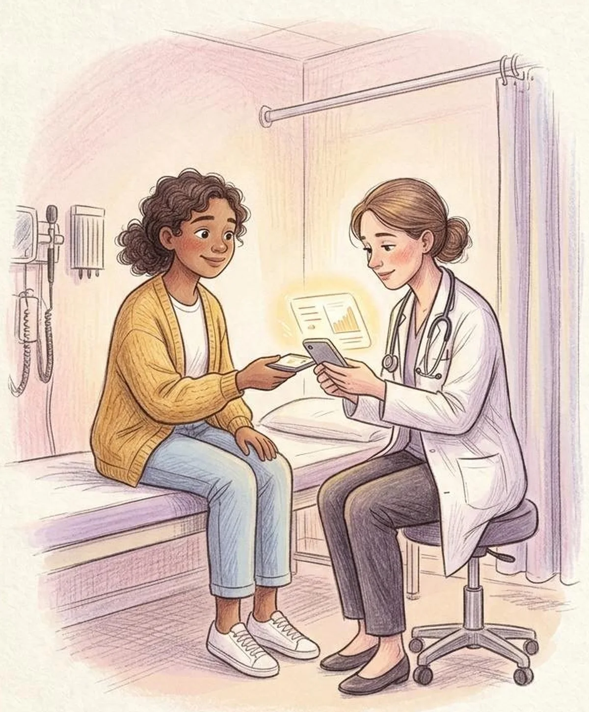
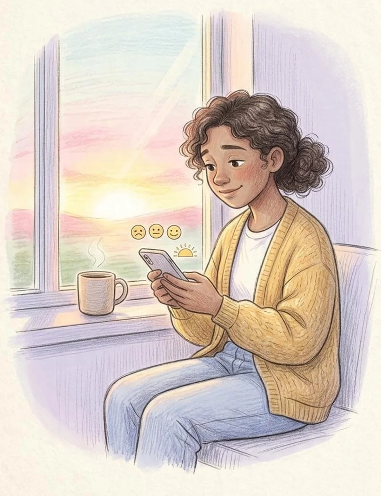

01 O cuidado não tem folga
Rotina em um só lugar
Medicações organizadas por horário, exames, consultas e receitas reunidos e visíveis.
Projeto em conjunto com o WayHub do Sistema Ânima de Educação
Já é dia.
Acompanhamento contínuo para quem vive com doenças crônicas autoimunes.
Entre uma consulta e outra podem passar meses. O Coema existe para que esse intervalo não seja atravessado sem ninguém olhando.
Quem vive com lúpus cuida de si todo dia. E tem dia em que a memória falha. Entre uma consulta e outra, passam meses. Nesse caminho, ninguém está olhando. O Coema acompanha esse intervalo e leva a história inteira para quem atende. Coema. Em tupi: já é dia.
".O problema
Uma doença autoimune crônica não tem cura e não tem folga. O sistema de defesa passa a atacar o próprio corpo, em fases de crise e de calma que não avisam quando vão mudar. O lúpus é o caso que tomamos como referência, pois pode atingir vários órgãos e costuma exigir mais de um especialista.
Remédios em vários horários, exames periódicos, consultas com mais de um especialista, receitas que vencem. Gerir a própria doença é um trabalho diário, e quase ninguém vê.

A doença e os tratamentos podem afetar memória e atenção. Perder um exame ou deixar uma receita vencer não é descuido: faz parte do quadro, e interrompe o tratamento.

O retorno costuma ser marcado para meses depois. Nesse intervalo, o que a pessoa sente não chega a ninguém.
Dor, inchaço, febre e cansaço extremo parecem pouco no começo e podem ser o início de uma crise. Sem acompanhamento, a inflamação pode atingir rins, coração, pulmões, articulações e sistema nervoso, e deixar sequelas que poderiam ser evitadas.
Quando a equipe muda, parte da história clínica se perde. O paciente reconta tudo, e nem tudo é lembrado.
Quem atende num pronto-atendimento não tem o histórico e tem poucos minutos. Um sinal de alerta de uma doença complexa pode ser lido como algo simples.

Repetir a própria história, lembrar de tudo e decidir sozinho quando procurar ajuda cansa e é insuficiente. Esse cansaço é uma das razões pelas quais tratamentos são abandonados.
Essas sete dificuldades têm a mesma raiz. A informação existe, mas está espalhada, incompleta ou não chega a quem precisa dela, na hora em que precisa.
Conteúdo informativo, que não substitui a orientação de um profissional de saúde. Fontes: Ministério da Saúde e Sociedade Brasileira de Reumatologia.
Continuidade do cuidado
Em muitos serviços de saúde, as equipes mudam com frequência. Quem trata uma doença por anos passa por vários profissionais, e o registro nem sempre acompanha o paciente.

A solução
O Coema transforma o cuidado diário do paciente em acompanhamento contínuo, sem trabalho extra para ele nem para a equipe.
01 O cuidado não tem folga
Medicações organizadas por horário, exames, consultas e receitas reunidos e visíveis.
02 A memória falha
O aviso começa um mês antes e se repete: quinze dias, uma semana, três dias, véspera e horas antes. O som é discreto, e um segundo lembrete, mais suave, aparece se o primeiro passar.
03 Meses sem ninguém olhando
Um registro rápido de como a pessoa está, parecido com um caderno de humor. Só pede detalhes quando algo relevante acontece.
04 Sinais pequenos, danos grandes
O sistema percebe desvios cedo e indica o que fazer, antes que virem crise.
05 Um profissional diferente a cada vez
A história clínica completa, aberta por token a quem estiver atendendo.
06 Na urgência, ninguém conhece o caso
Um resumo do quadro pronto para mostrar e um cartão com diagnóstico, alergias, medicações e contato, disponível mesmo sem internet.
07 O peso de carregar tudo sozinho
Um contato de confiança é avisado em situação de risco, e um cuidador pode registrar e consultar informações quando o paciente não estiver em condições.

O Coema existe para acompanhar, não para vigiar. Cada decisão de desenho procura reduzir culpa, esforço e carga mental.
Como funciona
Um check-in rápido: como está hoje, se tomou a medicação, se notou algo diferente.
O relato vira registro estruturado e passa pelas regras de triagem.
Na maior parte dos dias, ninguém precisa fazer nada. Quando precisa, o aviso chega a quem pode agir.
Inteligência artificial
No Coema, a inteligência artificial tem uma função delimitada: conversar com o paciente e transformar o que ele conta em informação organizada. Ela não decide a gravidade de nada e não substitui nenhum profissional.
Quem convive com uma doença crônica conta o dia inteiro, não uma lista de sintomas. No mesmo relato cabem uma dor nova, uma noite mal dormida e uma semana difícil no trabalho. O caminho proposto é este:
A pessoa escreve ou responde com as próprias palavras, sem formulário longo.
A IA procura no relato apenas os sinais de uma lista definida e revisada por profissionais de saúde. Ela não cria categorias novas.
O que corresponde à lista vira um registro com quatro campos: o quê, onde, desde quando e com que intensidade.
O que não é sinal clínico fica guardado como anotação pessoal. Dá contexto à consulta, mas não entra na triagem.
Antes de salvar, a IA mostra o que entendeu, em linguagem simples, e a pessoa confirma ou corrige.
Se o relato é ambíguo, a IA faz uma pergunta objetiva. Ela nunca presume.
Apenas os sinais confirmados pelo paciente seguem para a triagem.
Exemplo fictício
Dormi mal, briguei com minha irmã e acordei com as mãos inchadas e doendo.
Este é o desenho proposto. A lista de sinais e os critérios serão definidos e validados com profissionais de saúde antes de qualquer uso real.
Triagem
Quem classifica é um conjunto de regras escritas e revisadas por profissionais de saúde, não a inteligência artificial. Cada regra pode ser lida, questionada e corrigida. Para a mesma entrada, o resultado é sempre o mesmo.
O registro é guardado no histórico. Ninguém é acionado.
Algo saiu do padrão. O paciente recebe orientação de acompanhar e o caso fica sinalizado para a equipe na próxima revisão.
Sinal que pede avaliação rápida. A equipe responsável e o contato de confiança são avisados, e o paciente é orientado a procurar atendimento.
O profissional não precisa vigiar um painel. Na maior parte do tempo, o Coema não pede nada dele. Quando abre um caso, encontra o resumo e a linha do tempo prontos.
Demonstração ilustrativa com regras simplificadas e fictícias. Não é o sistema real e não deve ser usada para avaliar a saúde de ninguém.
Nenhuma resposta é enviada ou guardada. Tudo acontece nesta página.